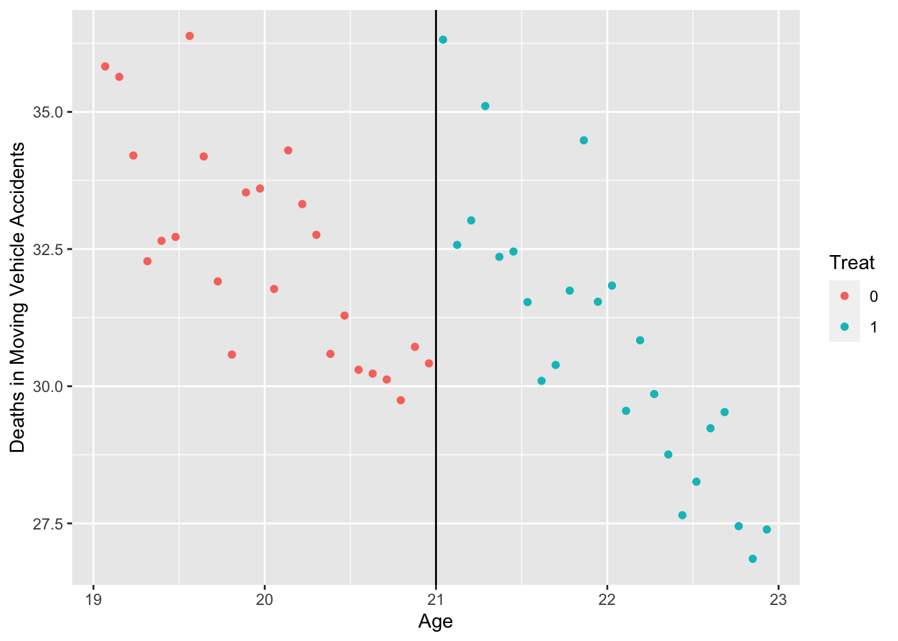
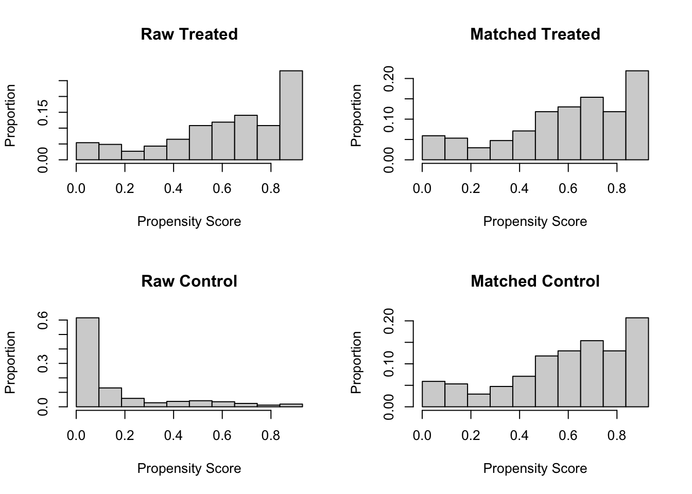
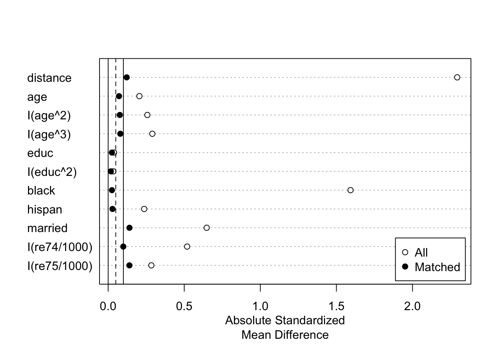

Chapter 7 Simple DID estimator
In this lab, we will use propensity scores to perform other types of analyses (weighting, stratification, and covariate adjustment)
library(foreign)
library(car)
library(stargazer)
#library(devtools)
#devtools::install_github('ccolonescu/PoEdata')
library(PoEdata)7.1 Data
Getting sample data:
mydata = read.dta("http://dss.princeton.edu/training/Panel101.dta")
head(mydata)## country year y y_bin x1 x2 x3 opinion op
## 1 A 1990 1342787840 1 0.2779036 -1.1079559 0.28255358 Str agree 1
## 2 A 1991 -1899660544 0 0.3206847 -0.9487200 0.49253848 Disag 0
## 3 A 1992 -11234363 0 0.3634657 -0.7894840 0.70252335 Disag 0
## 4 A 1993 2645775360 1 0.2461440 -0.8855330 -0.09439092 Disag 0
## 5 A 1994 3008334848 1 0.4246230 -0.7297683 0.94613063 Disag 0
## 6 A 1995 3229574144 1 0.4772141 -0.7232460 1.02968037 Str agree 17.1.1 scatterplot by country:
scatterplot(y~year|country, boxplots=FALSE, smooth=TRUE, data = mydata)
7.1.2 Create dummy variables
- time: time when the treatment started
Let’s assume that treatment started in 1994. In this case, years before 1994 will have a value of 0 and 1994+ a 1. If you already have this skip this step.
mydata$time = ifelse(mydata$year >= 1994, 1, 0)2.treated: the group exposed to the treatment
- In this example let’s assumed that countries with code 5,6, and 7 were treated (=1).
- Countries 1-4 were not treated (=0). If you already have this skip this step.
mydata$treated = ifelse(mydata$country == "E" |
mydata$country == "F" |
mydata$country == "G", 1, 0)3.did: an interaction by multiplying time and treated. We will call this interaction ‘did’.
mydata$did = mydata$time * mydata$treated7.2 The DID estimator
didreg = lm(y ~ treated + time + did, data = mydata)
summary(didreg)##
## Call:
## lm(formula = y ~ treated + time + did, data = mydata)
##
## Residuals:
## Min 1Q Median 3Q Max
## -9.768e+09 -1.623e+09 1.167e+08 1.393e+09 6.807e+09
##
## Coefficients:
## Estimate Std. Error t value Pr(>|t|)
## (Intercept) 3.581e+08 7.382e+08 0.485 0.6292
## treated 1.776e+09 1.128e+09 1.575 0.1200
## time 2.289e+09 9.530e+08 2.402 0.0191 *
## did -2.520e+09 1.456e+09 -1.731 0.0882 .
## ---
## Signif. codes: 0 '***' 0.001 '**' 0.01 '*' 0.05 '.' 0.1 ' ' 1
##
## Residual standard error: 2.953e+09 on 66 degrees of freedom
## Multiple R-squared: 0.08273, Adjusted R-squared: 0.04104
## F-statistic: 1.984 on 3 and 66 DF, p-value: 0.1249- The coefficient for ‘did’ is the differences-in-differences estimator.
- The effect is significant at 10% with the treatment having a negative effect.
7.3 Card and Krueger (1994) from PoEdata
- The “PoEdata”” package loads into R the data sets that accompany Principles of Econometrics 4e, by Carter Hill, William Griffiths, and Guay Lim.
- by Dr. Constantin Colonescu
- https://github.com/ccolonescu/PoEdata
- https://bookdown.org/ccolonescu/RPoE4/indvars.html#the-difference-in-differences-estimator
data("njmin3", package="PoEdata")
?njmin3 # minimum wage example 7.3.1 Models
mod1 <- lm(fte~nj*d, data=njmin3)
mod2 <- lm(fte~nj*d+
kfc+roys+wendys+co_owned, data=njmin3)
mod3 <- lm(fte~nj*d+
kfc+roys+wendys+co_owned+
southj+centralj+pa1, data=njmin3)stargazer::stargazer(mod1, mod2, mod3,
type = 'text', model.names = FALSE,
header=FALSE, keep.stat="n",digits=2,
column.labels = c('DID', 'DIDw/Cov', 'DIDw/All'))##
## ==========================================
## Dependent variable:
## -----------------------------
## fte
## DID DIDw/Cov DIDw/All
## (1) (2) (3)
## ------------------------------------------
## nj -2.89** -2.38** -0.91
## (1.19) (1.08) (1.27)
##
## d -2.17 -2.22 -2.21
## (1.52) (1.37) (1.35)
##
## kfc -10.45*** -10.06***
## (0.85) (0.84)
##
## roys -1.62* -1.69**
## (0.86) (0.86)
##
## wendys -1.06 -1.06
## (0.93) (0.92)
##
## co_owned -1.17 -0.72
## (0.72) (0.72)
##
## southj -3.70***
## (0.78)
##
## centralj 0.01
## (0.90)
##
## pa1 0.92
## (1.38)
##
## nj:d 2.75 2.85* 2.81*
## (1.69) (1.52) (1.50)
##
## Constant 23.33*** 25.95*** 25.32***
## (1.07) (1.04) (1.21)
##
## ------------------------------------------
## Observations 794 794 794
## ==========================================
## Note: *p<0.1; **p<0.05; ***p<0.017.4 Optional: Demo of HonestDiD (Rambachan & Roth, 2022)
See original tutorial: https://github.com/asheshrambachan/HonestDiD
library(here)## here() starts at /Users/gejiang/Box Sync/MacSync/Teaching/574Quasi-Experimental/Class2022/Lectures/R_Book_QuasiExperimentslibrary(dplyr)##
## Attaching package: 'dplyr'## The following object is masked from 'package:car':
##
## recode## The following objects are masked from 'package:stats':
##
## filter, lag## The following objects are masked from 'package:base':
##
## intersect, setdiff, setequal, unionlibrary(did)
library(Rglpk)## Loading required package: slam## Using the GLPK callable library version 5.0library(haven)
library(ggplot2)
library(fixest)
library(HonestDiD)## Loading required package: CVXR##
## Attaching package: 'CVXR'## The following object is masked from 'package:dplyr':
##
## id## The following object is masked from 'package:stats':
##
## power## Loading required package: doParallel## Loading required package: foreach## Loading required package: iterators## Loading required package: parallel## Loading required package: latex2exp## Loading required package: lpSolveAPI## Loading required package: Matrix## Loading required package: pracma##
## Attaching package: 'pracma'## The following objects are masked from 'package:Matrix':
##
## expm, lu, tril, triu## The following objects are masked from 'package:CVXR':
##
## conv, grad, size## The following object is masked from 'package:car':
##
## logit## Loading required package: purrr##
## Attaching package: 'purrr'## The following object is masked from 'package:pracma':
##
## cross## The following objects are masked from 'package:foreach':
##
## accumulate, when## The following object is masked from 'package:CVXR':
##
## is_vector## The following object is masked from 'package:car':
##
## some## Loading required package: ROI## ROI: R Optimization Infrastructure## Registered solver plugins: nlminb.## Default solver: auto.##
## Attaching package: 'ROI'## The following objects are masked from 'package:CVXR':
##
## constraints, constraints<-, objective, objective<-## Loading required package: tidyverse## Found more than one class "atomicVector" in cache; using the first, from namespace 'Matrix'## Also defined by 'Rmpfr'## Found more than one class "atomicVector" in cache; using the first, from namespace 'Matrix'## Also defined by 'Rmpfr'## Found more than one class "atomicVector" in cache; using the first, from namespace 'Matrix'## Also defined by 'Rmpfr'## Found more than one class "atomicVector" in cache; using the first, from namespace 'Matrix'## Also defined by 'Rmpfr'## Found more than one class "atomicVector" in cache; using the first, from namespace 'Matrix'## Also defined by 'Rmpfr'## Found more than one class "atomicVector" in cache; using the first, from namespace 'Matrix'## Also defined by 'Rmpfr'## Found more than one class "atomicVector" in cache; using the first, from namespace 'Matrix'## Also defined by 'Rmpfr'## Found more than one class "atomicVector" in cache; using the first, from namespace 'Matrix'## Also defined by 'Rmpfr'## Found more than one class "atomicVector" in cache; using the first, from namespace 'Matrix'## Also defined by 'Rmpfr'## Found more than one class "atomicVector" in cache; using the first, from namespace 'Matrix'## Also defined by 'Rmpfr'## Found more than one class "atomicVector" in cache; using the first, from namespace 'Matrix'## Also defined by 'Rmpfr'## Found more than one class "atomicVector" in cache; using the first, from namespace 'Matrix'## Also defined by 'Rmpfr'## ── Attaching packages ─────────────────────────────────────── tidyverse 1.3.2 ──
## ✔ tibble 3.1.8 ✔ stringr 1.4.0
## ✔ tidyr 1.2.1 ✔ forcats 0.5.2
## ✔ readr 2.1.2
## ── Conflicts ────────────────────────────────────────── tidyverse_conflicts() ──
## ✖ purrr::accumulate() masks foreach::accumulate()
## ✖ purrr::cross() masks pracma::cross()
## ✖ tidyr::expand() masks Matrix::expand()
## ✖ dplyr::filter() masks stats::filter()
## ✖ CVXR::id() masks dplyr::id()
## ✖ purrr::is_vector() masks CVXR::is_vector()
## ✖ dplyr::lag() masks stats::lag()
## ✖ tidyr::pack() masks Matrix::pack()
## ✖ dplyr::recode() masks car::recode()
## ✖ purrr::some() masks car::some()
## ✖ tidyr::unpack() masks Matrix::unpack()
## ✖ purrr::when() masks foreach::when()
## Loading required package: TruncatedNormaldf <- read_dta("https://raw.githubusercontent.com/Mixtape-Sessions/Advanced-DID/main/Exercises/Data/ehec_data.dta")
head(df,5)## # A tibble: 5 × 5
## stfips year dins yexp2 W
## <dbl+lbl> <dbl+lbl> <dbl> <dbl> <dbl>
## 1 1 [alabama] 2008 [2008] 0.681 NA 613156
## 2 1 [alabama] 2009 [2009] 0.658 NA 613156
## 3 1 [alabama] 2010 [2010] 0.631 NA 613156
## 4 1 [alabama] 2011 [2011] 0.656 NA 613156
## 5 1 [alabama] 2012 [2012] 0.671 NA 6131567.4.1 Estimate the baseline DiD
#Keep years before 2016. Drop the 2016 cohort
df_nonstaggered <- df %>% filter(year < 2016 &
(is.na(yexp2)| yexp2 != 2015) )
#Create a treatment dummy
df_nonstaggered <- df_nonstaggered %>% mutate(D = case_when( yexp2 == 2014 ~ 1,
T ~ 0))
#Run the TWFE spec
twfe_results <- fixest::feols(dins ~ i(year, D, ref = 2013) | stfips + year,
cluster = "stfips",
data = df_nonstaggered)
betahat <- summary(twfe_results)$coefficients #save the coefficients
sigma <- summary(twfe_results)$cov.scaled #save the covariance matrix
fixest::iplot(twfe_results)
7.4.2 Sensitivity analysis using relative magnitudes restrictions
delta_rm_results <-
HonestDiD::createSensitivityResults_relativeMagnitudes(
betahat = betahat, #coefficients
sigma = sigma, #covariance matrix
numPrePeriods = 5, #num. of pre-treatment coefs
numPostPeriods = 2, #num. of post-treatment coefs
Mbarvec = seq(0.5,2,by=0.5) #values of Mbar
)
delta_rm_results## # A tibble: 4 × 5
## lb ub method Delta Mbar
## <dbl> <dbl> <chr> <chr> <dbl>
## 1 0.0240 0.0672 C-LF DeltaRM 0.5
## 2 0.0170 0.0720 C-LF DeltaRM 1
## 3 0.00824 0.0797 C-LF DeltaRM 1.5
## 4 -0.000916 0.0881 C-LF DeltaRM 2originalResults <- HonestDiD::constructOriginalCS(betahat = betahat,
sigma = sigma,
numPrePeriods = 5,
numPostPeriods = 2)
HonestDiD::createSensitivityPlot_relativeMagnitudes(delta_rm_results, originalResults)
7.5 Optional: Synthetic Control
library(devtools)
devtools::install_github("edunford/tidysynth")
library(tidysynth)7.5.1 Smoking data
data("smoking")
smoking %>% dplyr::glimpse()## Rows: 1,209
## Columns: 7
## $ state <chr> "Rhode Island", "Tennessee", "Indiana", "Nevada", "Louisiana…
## $ year <dbl> 1970, 1970, 1970, 1970, 1970, 1970, 1970, 1970, 1970, 1970, …
## $ cigsale <dbl> 123.9, 99.8, 134.6, 189.5, 115.9, 108.4, 265.7, 93.8, 100.3,…
## $ lnincome <dbl> NA, NA, NA, NA, NA, NA, NA, NA, NA, NA, NA, NA, NA, NA, NA, …
## $ beer <dbl> NA, NA, NA, NA, NA, NA, NA, NA, NA, NA, NA, NA, NA, NA, NA, …
## $ age15to24 <dbl> 0.1831579, 0.1780438, 0.1765159, 0.1615542, 0.1851852, 0.175…
## $ retprice <dbl> 39.3, 39.9, 30.6, 38.9, 34.3, 38.4, 31.4, 37.3, 36.7, 28.8, …7.5.2 Generate Control
The method aims to generate a synthetic California using information from a subset of control states (the “donor pool”) where a similar law was not implemented. The donor pool is the subset of case comparisons from which information is borrowed to generate a synthetic version of the treated unit (“California”).
smoking_out <-
smoking %>%
# initial the synthetic control object
synthetic_control(outcome = cigsale, # outcome
unit = state, # unit index in the panel data
time = year, # time index in the panel data
i_unit = "California", # unit where the intervention occurred
i_time = 1988, # time period when the intervention occurred
generate_placebos=T # generate placebo synthetic controls (for inference)
) %>%
# Generate the aggregate predictors used to fit the weights
# average log income, retail price of cigarettes, and proportion of the
# population between 15 and 24 years of age from 1980 - 1988
generate_predictor(time_window = 1980:1988,
ln_income = mean(lnincome, na.rm = T),
ret_price = mean(retprice, na.rm = T),
youth = mean(age15to24, na.rm = T)) %>%
# average beer consumption in the donor pool from 1984 - 1988
generate_predictor(time_window = 1984:1988,
beer_sales = mean(beer, na.rm = T)) %>%
# Lagged cigarette sales
generate_predictor(time_window = 1975,
cigsale_1975 = cigsale) %>%
generate_predictor(time_window = 1980,
cigsale_1980 = cigsale) %>%
generate_predictor(time_window = 1988,
cigsale_1988 = cigsale) %>%
# Generate the fitted weights for the synthetic control
generate_weights(optimization_window = 1970:1988, # time to use in the optimization task
margin_ipop = .02,sigf_ipop = 7,bound_ipop = 6 # optimizer options
) %>%
# Generate the synthetic control
generate_control()Once the synthetic control is generated, one can easily assess the fit by comparing the trends of the synthetic and observed time series. The idea is that the trends in the pre-intervention period should map closely onto one another.
smoking_out %>% plot_trends()
To capture the causal quantity (i.e. the difference between the observed and counterfactual), one can plot the differences using plot_differences()
smoking_out %>% plot_differences()
In addition, one can easily examine the weighting of the units and variables in the fit. This allows one to see which cases were used, in part, to generate the synthetic control.
smoking_out %>% plot_weights()
Another useful way of evaluating the synthetic control is to look at how comparable the synthetic control is to the observed covariates of the treated unit.
smoking_out %>% grab_balance_table()## # A tibble: 7 × 4
## variable California synthetic_California donor_sample
## <chr> <dbl> <dbl> <dbl>
## 1 ln_income 10.1 9.85 9.83
## 2 ret_price 89.4 89.4 87.3
## 3 youth 0.174 0.174 0.173
## 4 beer_sales 24.3 24.2 23.7
## 5 cigsale_1975 127. 127. 137.
## 6 cigsale_1980 120. 120. 138.
## 7 cigsale_1988 90.1 91.4 114.7.5.3 Inference
For inference, the method relies on repeating the method for every donor in the donor pool exactly as was done for the treated unit - i.e. generating placebo synthetic controls). By setting generate_placebos = TRUE when initializing the synth pipeline with synthetic_control(), placebo cases are automatically generated when constructing the synthetic control of interest. This makes it easy to explore how unique difference between the observed and synthetic unit is when compared to the placebos.
smoking_out %>% plot_placebos()there is a significance table that can be extracted with one of the many grab_ prefix functions.
smoking_out %>% grab_significance()## # A tibble: 39 × 8
## unit_name type pre_mspe post_mspe mspe_ratio rank fishers_…¹ z_score
## <chr> <chr> <dbl> <dbl> <dbl> <int> <dbl> <dbl>
## 1 California Treated 3.17 392. 124. 1 0.0256 5.32
## 2 Georgia Donor 3.79 179. 47.2 2 0.0513 1.70
## 3 Indiana Donor 25.2 770. 30.6 3 0.0769 0.916
## 4 West Virginia Donor 9.52 284. 29.8 4 0.103 0.881
## 5 Wisconsin Donor 11.1 268. 24.1 5 0.128 0.607
## 6 Missouri Donor 3.03 67.8 22.4 6 0.154 0.528
## 7 Texas Donor 14.4 277. 19.3 7 0.179 0.383
## 8 South Carolina Donor 12.6 234. 18.6 8 0.205 0.351
## 9 Virginia Donor 9.81 96.4 9.83 9 0.231 -0.0646
## 10 Nebraska Donor 6.30 52.9 8.40 10 0.256 -0.132
## # … with 29 more rows, and abbreviated variable name ¹fishers_exact_pvalue